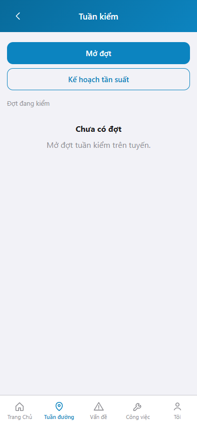
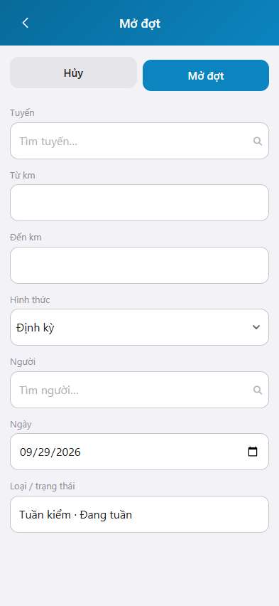

Ảnh khung iPhone 15, 393 x 852. Bản markdown.
Tuần kiểm là việc của người quản lý, sử dụng đường bộ: mở đợt kiểm tra trên một đoạn tuyến và theo dõi đợt đang kiểm.
Đăng nhập: Hướng dẫn đăng nhập.
graph TD
A[Đăng nhập] --> B[Tuần kiểm]
B --> C[Mở đợt]
C --> D[Đợt đang kiểm]
Mục đích: xem đợt tuần kiểm đang mở và vào lập đợt mới.

Mục đích: lập đợt tuần kiểm trên một tuyến, từ km đến km.

* = bắt buộc khi Mở đợt. Ô trống = không bắt buộc.
| Nhãn trên màn | * | Cách điền |
|---|---|---|
| Tuyến | * | Chọn tuyến trong danh mục. |
| Từ km | Km đầu đoạn kiểm. | |
| Đến km | Km cuối đoạn kiểm. | |
| Hình thức | Định kỳ hoặc Đột xuất. | |
| Lý do đột xuất | * | Chỉ hiện khi Hình thức là Đột xuất. |
| Người | * | Chọn người kiểm trong danh mục. |
| Ngày | Ngày kế hoạch. Mặc định hôm nay. | |
| Loại / trạng thái | Chỉ đọc: Tuần kiểm, Đang tuần. |